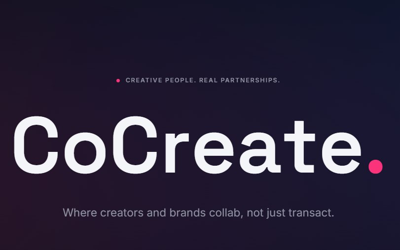
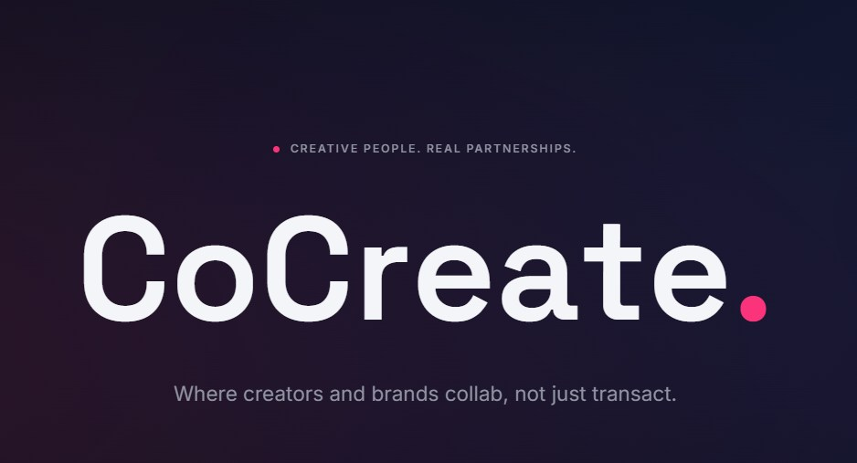

CoCreate
A Trust-First Marketplace for Micro-Creator Collaborations · Software Product Management · ISB
CoCreate helps brands and micro-creators discover each other and agree on clear collaboration terms through structured briefs, two-sided trust profiles and rate benchmarks.

- Context
- Product concept for a Software Product Management project at ISB
- My role
- Product discovery, customer research, problem validation, MVP scoping, prototype development, success metrics and product strategy
- Team
- Five-member team
Product preview

Context
CoCreate is a product concept developed as part of a Software Product Management project at ISB. I worked on product discovery, customer research, problem validation, MVP scoping, prototype development, success metrics and product strategy as part of a five-member team.
Problem
Micro-creator collaborations often happen through Instagram DMs and WhatsApp, leaving important deal terms scattered across conversations. Brands struggle to assess creator reliability, while creators face ambiguity around deliverables, usage rights, budgets and payment terms.
In interviews with 26 participants, 17 raised scope or usage-rights concerns, and 16 raised trust concerns. These issues can create negotiation friction, mismatched expectations and hesitation to commit to collaborations.
My process
Research and discovery
Interviewed 26 participants across creators, brands and agencies to identify pain points, understand current workflows and assess willingness to pay.
Problem prioritisation
Prioritised scope ambiguity and counterparty trust because they directly influence whether a collaboration proceeds.
Prototype testing
Tested the prototype with two creators and one brand manager to evaluate comprehension and feature usefulness.
MVP prioritisation
Designed a concierge-led pilot with 3–5 brands and 30–50 creators to validate actual behaviour before investing in automation and payment infrastructure.
Success measurement
Defined Weekly Locked Collaborations as the North Star metric, supported by guardrails for disputes, off-platform drop-offs and time to lock.
Decisions
Locked Brief
Record deliverables, budget, timeline, usage type and rights duration before collaboration begins, reducing ambiguity for both sides.
Two-sided Trust Profile
Show reliability signals for brands and creators, helping users assess counterparties before committing.
Rate Benchmark
Provide the 25th percentile, median and 75th percentile for comparable creators to support more informed pricing decisions.
Concierge MVP
Start with manual verification and a limited pilot to learn from real user behaviour before scaling.
What we rejected or deferred
- Escrow, automated matching, extensive agency tools and subscriptions were deferred until core marketplace behaviour was validated. We also avoided penalising users for declining opportunities, since that could encourage unwanted commitments.
Outcome
- Research evidence: Identified scope/rights ambiguity in 17 of 26 interviews and trust concerns in 16.
- Prototype validation: In a small test with two creators and one brand manager, all three used the Trust Panel as an initial filter. The Locked Brief passed the comprehension test, while the rate benchmark was only partially validated.
- Product strategy: Defined a staged roadmap from behaviour validation in MVP1 to escrow-backed transactions in MVP2 and agency tools and subscriptions in MVP3.
- Business impact: Piloted the product with 4-5 creators and 2-3 brand managers